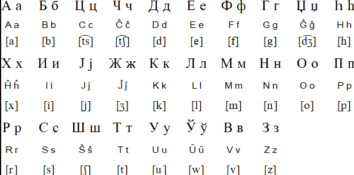

Cyrillic Esperanto is a form of alternate script Esperanto. In this case esperanto is written using the cyrillic alphabet [known usually as the 'Russian' alphabet
although many other languages use cyrillic].
There is no one standard for Cyrillic Esperanto so for the duration of this
web page i will be drawing from my own personal version, based off the image shown below.

However some of these letters do not exist on the modern russian keyboard.
so my version of Cyrillic Esperanto is modified to suit the modern russian keyboard. most notiably i substitute the characyers h and j with similar sounding alternatives.
English control sentence: "Welcome to my house! Enter freely. Go safely, and leave something of the happiness you bring!"
Cyrillic Esperanto [By table]:бонволу ал миа hомо! Ениру либере. Иру секуре, каj ласу ион де феличо ви алпортиц!
Cyrillic Esperanto [RUS keyboard appliant] бонволу ал миа хомо! Ениру либере. Иру секуре, каю ласу ион де феличо ви алпортиц!
Who?
Cyrillic Esperanto doesnt have one specific Esperantist it can be traced to. The history surrounding
the alternative script is extremely cloudy but its often thought to be the result of russian speaking esperantists adapting the language
to suit cyrillic type writers. Several Esperantists have their own theories and versions.
How can i get started?
I reccomend following the above chart, learning common cyrillic pronuncations, and knowing a base amount of Esperanto. It is very important to know that an alternate script will not change
the pronunciation of Esperanto.
Can i make my own alternate script?
Absolutely! its as easy as either picking a diffrent writing system such as greek, klingon, or daedric! Or if youre feeling creative, making your own using anything from random strokes, emojis,
or letters! below are some examples of my favorite alternate scripts!